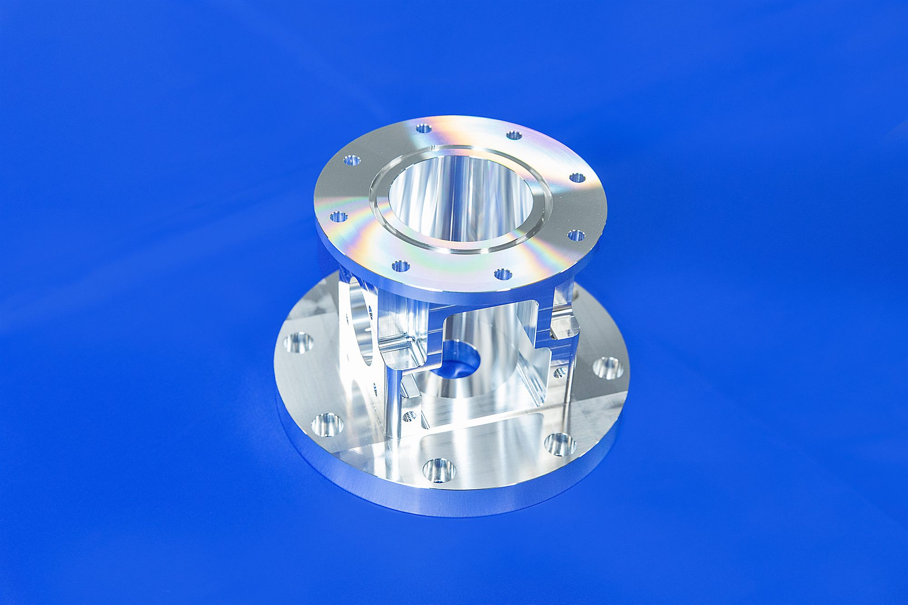
半導体装置真空チャンバー コンポーネント
材質 / A5052工法 / 5軸加工仕様 / UHV対応
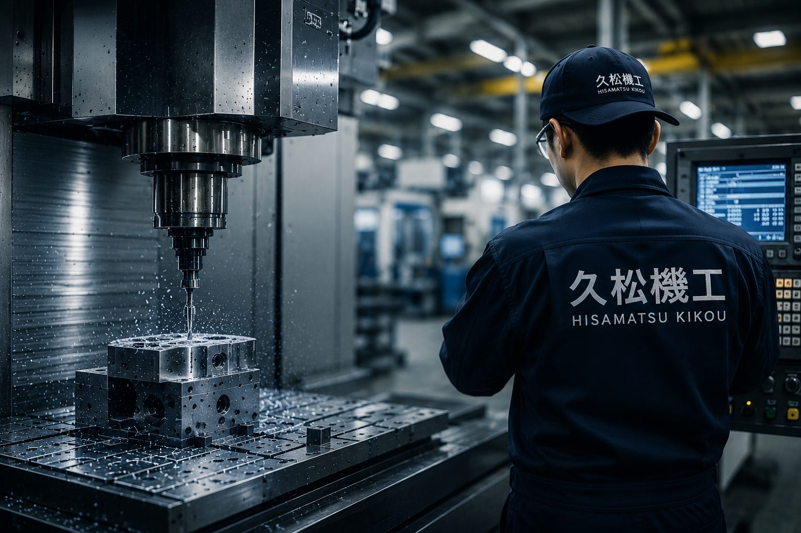
TRUSTED ACROSS INDUSTRIES
01 — STRENGTHS
高精度・大型・複雑形状——難しい要求にこそ、久松機工の技術が応えます。
門型5面加工
大型門型マシニングセンタによる大物部品の高精度加工。装置フレームや構造部品まで一台で対応します。
同時5軸制御
複雑形状を一度の段取りで加工。工程集約により精度と生産性を両立し、難形状部品にも対応します。
ISO 9001 / 三次元測定
ISO 9001に基づく品質管理体制と三次元測定により、トレーサビリティと精度を保証します。
4拠点・一貫生産
関東4拠点の設備と、設計・加工・組立・検査の一貫体制で、リードタイムを短縮します。
BY THE NUMBERS
創業（昭和53年）
社員数
関東4拠点体制
対応領域
02 — WORKS

半導体装置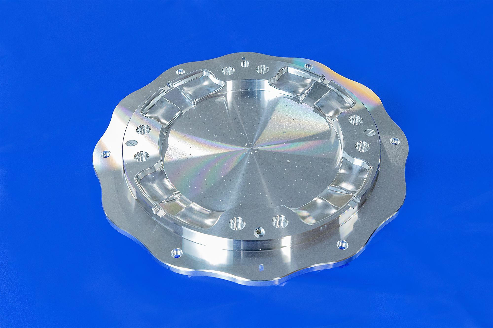
FPD装置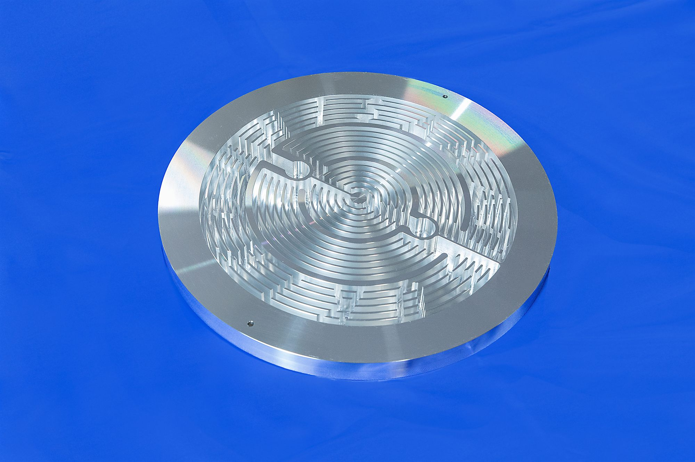
加速器関連03 — CASE STUDIES
お客様の課題に、どう応えたか。代表的な加工事例を「課題・対応・成果」でご紹介します。
課題
大型アルミ部品の高真空シール面に高い平面度が必要。かつタイトな納期。
対応
門型5面加工で工程を集約し段取りを削減。20℃測定室で全数検査。
成果
平面度 ±10μm 達成、納期 約30% 短縮。
課題
Ti-6Al-4Vの薄肉複雑形状。工具摩耗と加工変形のリスクが高い。
対応
同時5軸制御で一発加工。専用工具と条件を最適化し変形を抑制。
成果
寸法精度 ±5μm を確保、歩留りを改善。
課題
UHV環境に対応するクリーン度と、微小リークの確実な管理が必要。
対応
SUS316Lの精密加工＋専用洗浄。ヘリウムリーク試験で気密を検証。
成果
UHV基準を クリア、研究機関へ安定供給。
04 — FACILITY
最先端の加工機と測定機が、ミクロン単位の精度を生み出します。
FJV 5FACE-60/80 FSW
大型ワークを高精度に5面同時加工
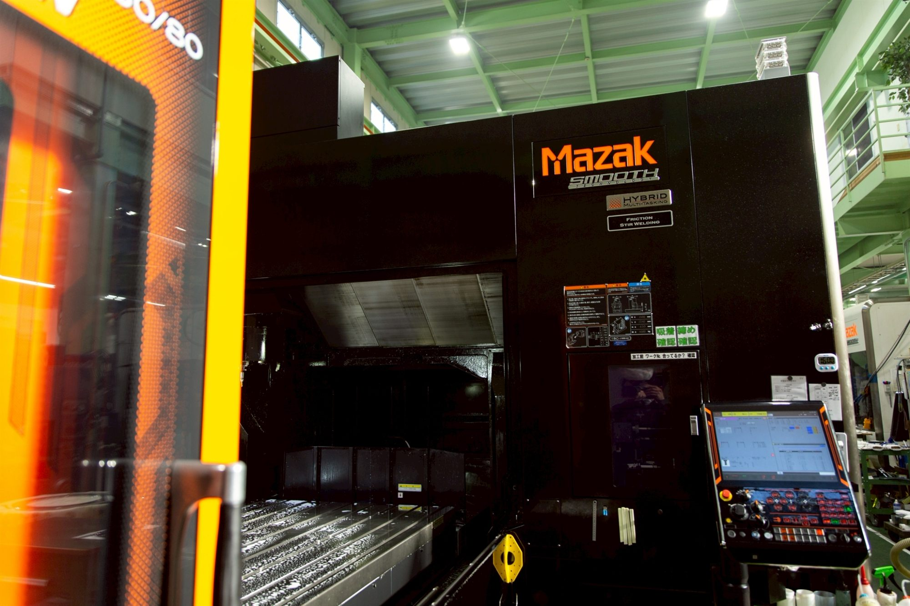
MAZAKMazak / INTEGREX i-350H
旋削とミーリングを一台で複合加工
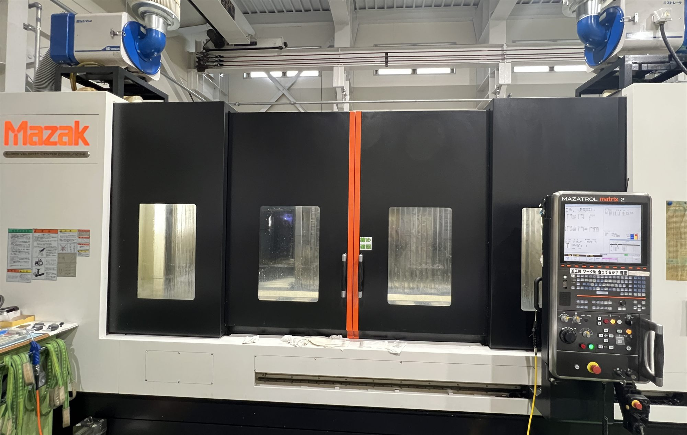
MAZAKMazak / SVC2000L/120
高速・高精度な加工を実現
CRYSTA-Apex V574
温度管理室での高精度寸法測定
3Dスキャナ型
非接触で全体形状を高速測定
SCROLL →
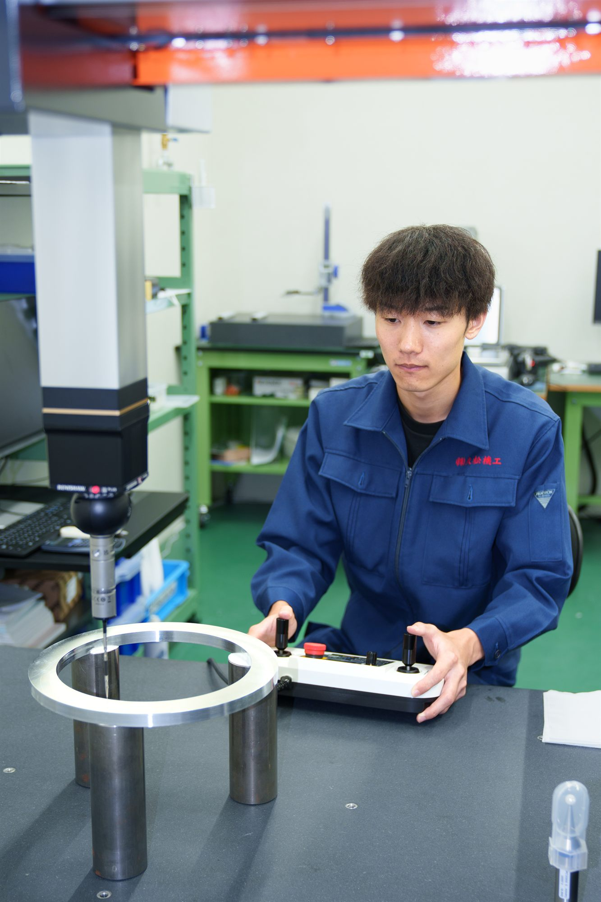
CMM / 三次元測定三次元測定機
Coordinate Measuring Machine
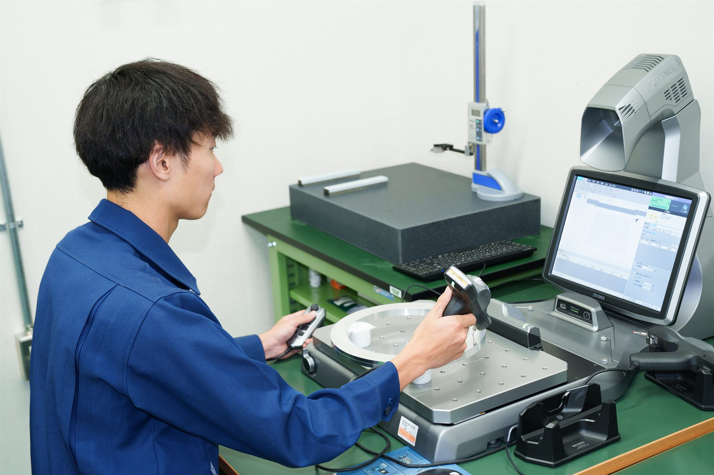
IMAGE MEASUREMENT05 — QUALITY
受入から出荷まで、4つの検査ステップと三次元測定で精度を保証。ISO 9001（2020年取得）に基づく品質マネジメント体制で、先端産業の要求に応えます。
材料証明書の確認と入荷時検査でトレーサビリティを確保。
加工中の寸法を随時測定し、規格内であることを保証。
20℃管理の測定室で三次元測定機により最終精度を検証。
全数・抜取データを記録し、成績書を添えて出荷。
06 — COMPANY
私たちは、目に見えないところで社会の最先端を支える「縁の下の技術者集団」です。大型精密部品加工から設計・組立、設備保全、重量物の運搬・据え付けまで、ものづくりを一貫してお引き受けします。
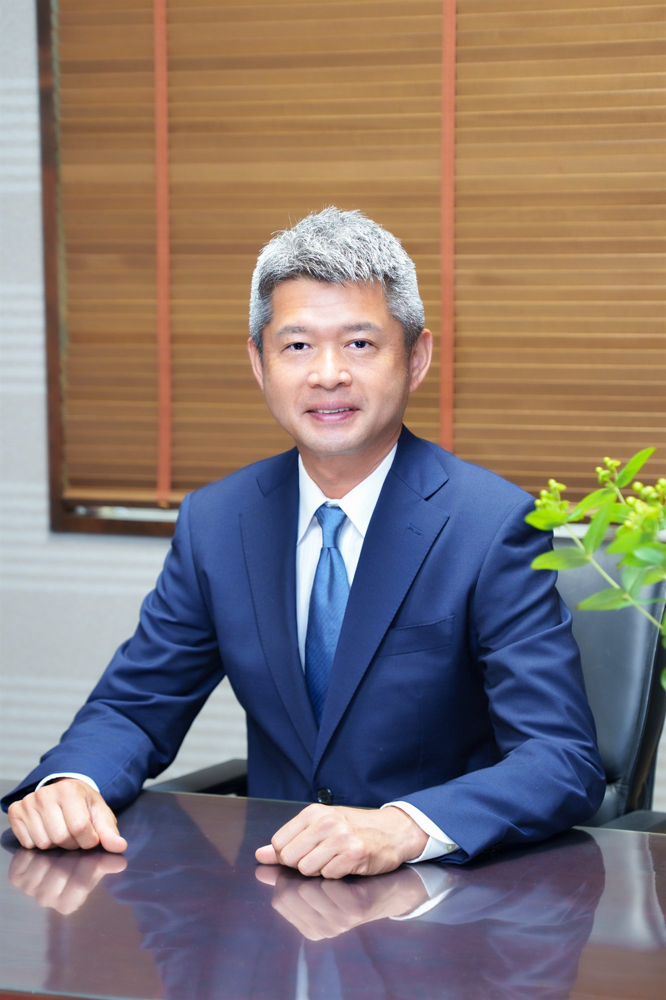
MESSAGE
当社は1968年の創業以来、半導体製造装置をはじめ、FPD・エネルギー・航空宇宙・加速器といった、社会の最先端を支える分野の精密部品加工に取り組んでまいりました。
ものづくりの根幹は「人」にあります。ミクロン単位の精度は、最新設備と技術者一人ひとりの誇りと研鑽によって生み出されます。私たちは、確かな品質と誠実な仕事で、お客様の挑戦を足元から支え続けます。
株式会社久松機工 代表取締役
久松 元大
大型精密部品加工
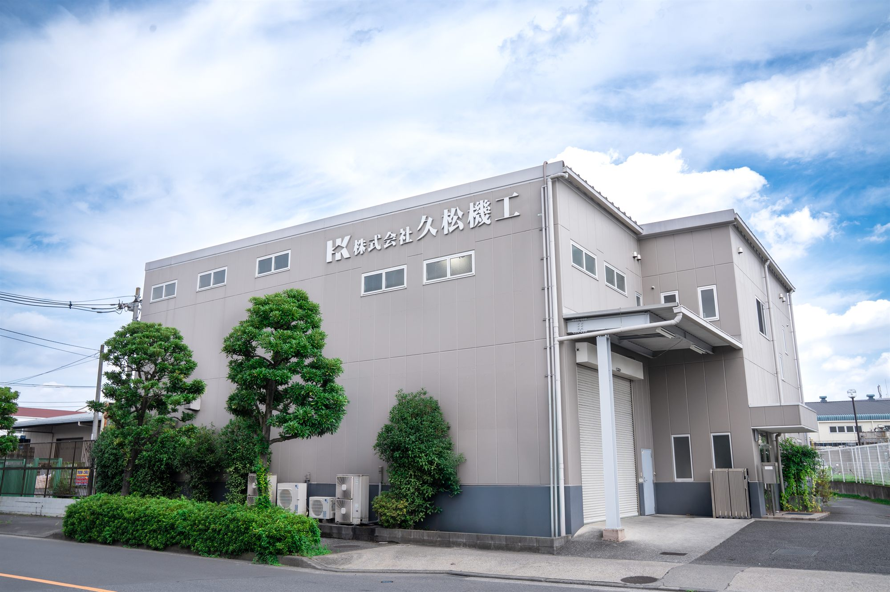
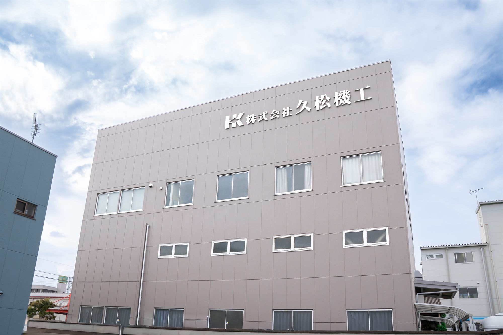
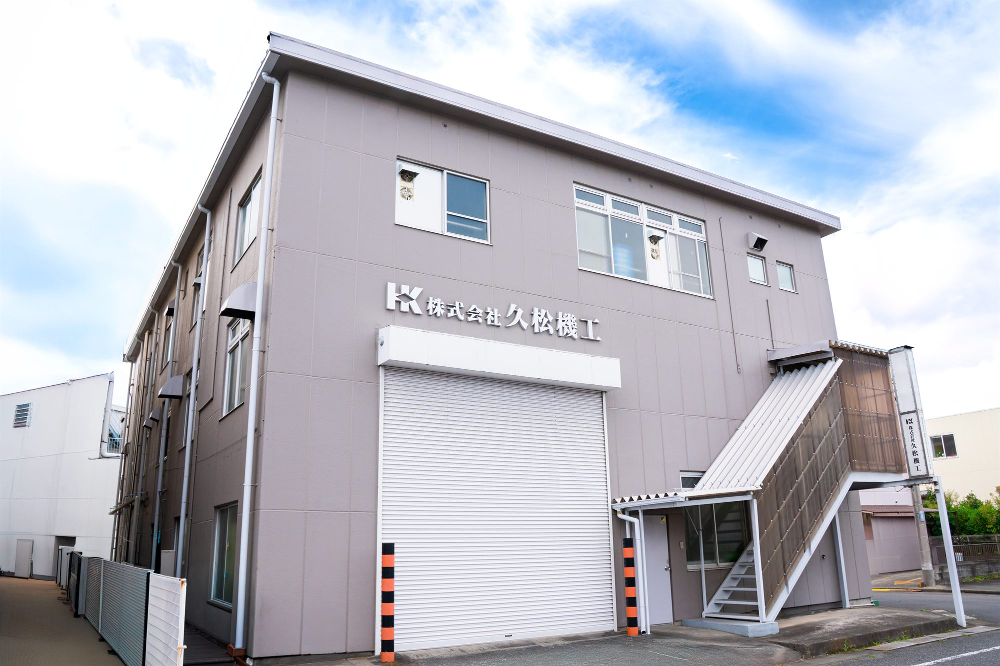
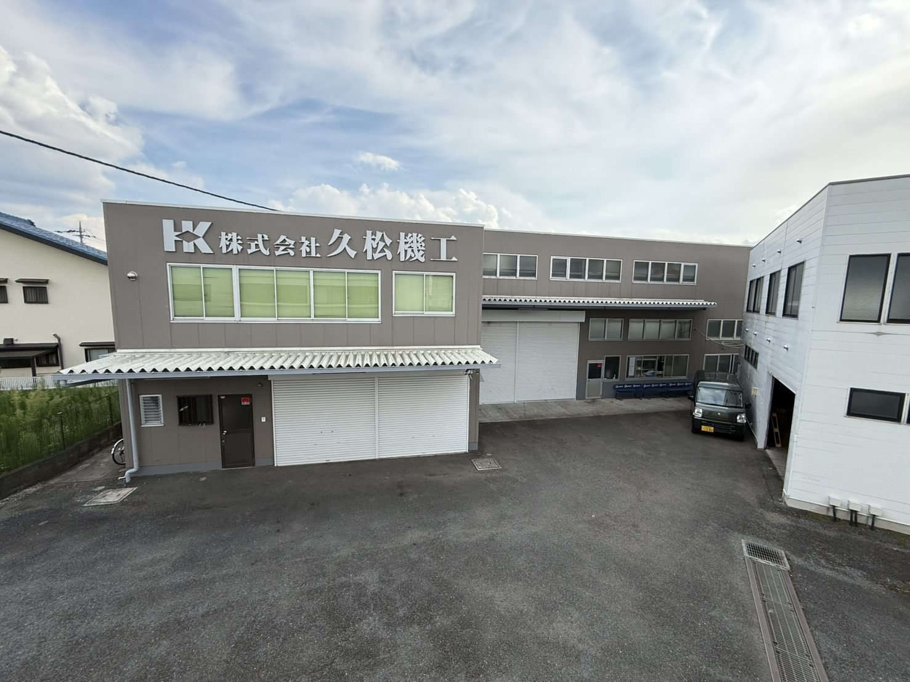
東京都日野市で開業
あきる野市で「久松機工」を創業
精密機械部品・半導体製造装置部品の加工を受注
立型マシニングセンタを導入、NC加工体制を確立
有限会社設立、青梅市へ工場移転
門型マシニングセンタ導入（FJV-60/120）
株式会社に組織変更
瑞穂工場完成、本社を瑞穂町へ移転
同時5軸制御MC（e-1060）・リニア駆動立型MC 導入
三次元測定機（CRYSTA-Apex S9106）導入、品質保証体制を強化
今井工場（青梅市）開設
新町工場（青梅市）開設
ISO 9001 取得5面門型MC・3Dスキャナ型三次元測定機 導入
複合旋盤（INTEGREX i-350H）・CNC三次元測定機（CRYSTA-Apex V574）導入
狭山工場（埼玉県狭山市）開設、関東4拠点体制へ
NEWS
COLUMN
08 — TECHNICAL CONSULTATION
図面が無い構想段階のご相談から、お見積り・採用まで。専門スタッフが対応します。
STEP 01
技術相談
STEP 02
お見積り
STEP 03
試作・検証
STEP 04
量産・納品
ありがとうございます。
担当者より2営業日以内にご連絡いたします。
お電話：042-533-5757（平日 9:00–17:00）